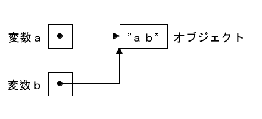

はじめに
前回までで Ruby の基本的なデータ型と制御構造について一通り説明しました。今回は関数の基本的な使い方について説明します。Ruby は柔軟なプログラミング言語なので、無理にオブジェクト指向機能を使わなくても、いろいろなプログラムを作ることができます。このとき、なくてはならない機能が関数です。関数を使いこなすとちょっと複雑なプログラムでも簡単に作ることができるようになります。
●関数の基礎知識
プログラミングは模型を組み立てる作業と似ています。簡単な処理は Ruby の組み込み関数を使って実現することができます。ところが、模型が大きくなると、一度に全体を組み立てるのは難しくなります。このような場合、全体をいくつかに分割して、まずその部分ごとに作ります。最後に、それを結合して全体を完成させます。
これは、プログラミングにも当てはまります。実現しようとする処理が複雑になると、一度に全部作ることは難しくなります。そこで、全体を小さな処理に分割して、ひとつひとつの処理を作成し、それらを組み合わせて全体のプログラムを完成させます [*1]。
分割した処理を作成する場合、それを組み込み関数のように一つの部品として扱えると便利です。つまり、小さな部品を作り、それを使って大きな部品を作り、最後にそれを組み合わせて全体を完成させます。このとき、もっとも基本となる部品が関数 [*2] です。
[*1] このような方法を分割統治法といいます。
[*2] Ruby はオブジェクト指向プログラミング (OOP) をサポートしているので、OOP 的な機能を使って部品に相当するオブジェクト (object) を作ることもできます。
●関数の定義方法
Ruby の関数定義はとても簡単です。例題として、数を 2 乗する関数を作ってみましょう。リスト 1 を見てください。
リスト 1 : 数を 2 乗する関数 def square(x) x * x end
関数を定義するときは def 文を使います。def 文の構文を図 1 に示します。
def 名前(仮引数名, ...) 処理A 処理B ... end 図 1 : Ruby の関数定義
def 文は図 2 のように数式と比較するとわかりやすいでしょう。
ｆ （ｘ） ＝ ｘ * ｘ
名前 引数 処理内容
def square (x) x * n end
図 2 : def 文と数式の比較
それでは実際に実行してみます。
irb> def square(x) irb> x * x irb> end => :square irb> square 10 => 100
関数を定義するには名前が必要です。def 文の次に関数の名前を記述します。Ruby の場合、def 文で定義された処理内容は、その名前で呼び出すことができます。square 10 を実行すると、10 を 2 乗した値 100 が返されます。
関数名の次にカッコで引数名を指定します。引数を取らない関数はカッコを省略することができます。それから、関数定義で使用する引数のことを「仮引数」、実際に与えられる引数を「実引数」といいます。square の定義で使用した x が仮引数で、square 10 の 10 が実引数となります。
次に、処理内容を記述します。square() の処理内容は x * x の一つだけですが、複数の処理を記述することができます。Ruby の場合、最後に実行された処理結果が関数の返り値となります。また、return 文を使って値を返すこともできます。
●ローカル変数とグローバル変数
それでは、ここで変数 x に値が代入されている場合を考えてみましょう。次の例を見てください。
irb> x = 5 => 5 irb> square 10 => ?
結果はどうなると思いますか。x には 5 がセットされているので 5 の 2 乗を計算して返り値は 25 になるのでしょうか。これは 10 の 2 乗を計算して結果は 100 になります。そして、square() を実行したあとでも変数 x の値は変わりません。
irb> square 10 => 100 irb> x => 5
square() の仮引数 x は、その関数が実行されているあいだだけ有効です。このような変数を「ローカル変数 (local variable)」もしくは「局所変数」といいます。Ruby の場合、英小文字で始まる変数はローカル変数として扱われます。これに対し、プログラムのどこからでもアクセスできる変数を「グローバル変数 (golbal variable)」もしくは「大域変数」といいます。Ruby の場合、変数名の先頭に $ をつけると、その変数はグローバル変数として扱われます。
このように、Ruby は変数の名前でローカル変数とグローバル変数を区別します。ところで、最初に値を代入した変数 x はローカル変数ですが、関数の仮引数ではなくトップレベルで値を代入しています。このため、その値は一時的なものではなく、Ruby を実行しているあいだ存在します。ただし、グローバル変数ではないので、他の関数からアクセスすることはできません。
プログラムを作る場合、関数を部品のように使います。ある関数を呼び出す場合、いままで使っていた変数の値が勝手に書き換えられると、呼び出す方が困ってしまいます。部品であるならば、ほかの処理に影響を及ぼさないように、自分自身の中で処理を完結させることが望ましいのです。これを実現するための必須機能がローカル変数なのです。
●ローカル変数の定義と有効範囲
Ruby の場合、関数の仮引数はローカル変数になりますが、それ以外にも関数の中でローカル変数が必要になるときがあります。この場合、Ruby はその変数に値を代入するだけで、ローカル変数として使用することができます。Ｃ/Ｃ++や Perl のように、ローカル変数の宣言を行う必要はありません。簡単な例を示しましょう。
リスト 2 : 要素の合計値を求める
def sum(ary)
total = 0
for n in ary
total += n
end
total
end
関数 sum() の引数 ary には要素が数値の配列を渡します。変数 total は関数内で 0 を代入しているのでローカル変数として使用することができます。Ruby の場合、値を代入していないローカル変数を参照するとエラーになります。なお、for 文で使う変数 n もローカル変数になります。
sum() の処理内容は簡単です。最初に、変数 total を 0 に初期化します。次に、for 文で配列の要素を順番に取り出して変数 n に代入し、n の値を total に加算していきます。最後に total の値を返します。実際に実行すると次のようになります。
irb> sum [1, 2, 3, 4, 5] => 15
ローカル変数が値を保持する期間のことを、変数の「有効範囲 (scope : スコープ) 」といいます。Ruby の場合、引数を含む関数内のローカル変数は、関数を実行している間だけ有効です。関数の実行が終了すると、これらの変数は廃棄されます。
これに対し、グローバル変数はどの関数からでもアクセスできるので、グローバル変数を多用すると関数を部品として扱うのが難しくなります。ある関数を修正したら、同じグローバル変数を使っていた他の関数が動作しなくなる場合もありえます。グローバル変数はなるべく使わないほうが賢明です。ご注意ください。
●デフォルト引数
Ruby の関数は引数にデフォルトの値を設定することができます。これをデフォルト引数といいます。値は = で指定します。簡単な例を示しましょう。
irb> def foo(a, b = 10, c = 100) irb> print a, " ", b, " ", c, "\n" irb> end => :foo irb> foo 1 1 10 100 => nil irb> foo 1, 2 1 2 100 => nil irb> foo 1, 2, 3 1 2 3 =>nil
関数 foo() の引数 a は通常の引数で、引数 b と c がデフォルト値を指定した引数です。デフォルト引数は通常の引数の後ろに定義します。foo() を呼び出すとき、引数 a には値を渡さないといけませんが、引数 b と c の値は省略することができます。このとき、使用される値がデフォルト値です。
たとえば、foo 1 と呼び出すと 1 10 100 と表示され、引数 b と c の値はデフォルト値が使用されていることがわかります。foo 1, 2 と呼び出すと、引数 b の値はデフォルト値ではなく、実引数 2 が b の値になります。同様に、foo 1, 2, 3 と呼び出すと、仮引数 c の値は実引数 3 になるので 1 2 3 と表示されます。
●可変個の引数
仮引数の個数よりも多くの値を受け取りたい場合は、名前に * を付けた引数を用意します。仮引数に入りきらない値は、配列に格納されて * を付けた引数に渡されます。これで可変個の引数を受け取る関数を定義することができます。簡単な例を示しましょう。
irb> def baz(a, *b) irb> print a, " ", b, "\n" irb> end => :baz irb> baz 1 1 [] => nil irb> baz 1, 2 1 [2] => nil irb> baz 1, 2, 3 1 [2, 3] => nil
仮引数 *b は通常の仮引数とデフォルト引数よりも後ろに定義します。関数 baz() は通常の引数が一つしかありません。baz 1 と呼び出すと、引数 a に 1 がセットされます。実引数はもうないので、引数 b には空の配列 [] が渡されます。baz 1, 2 と呼び出すと、実引数 2 が配列に格納されて引数 b に渡されます。同様に、baz 1, 2, 3 は 2 と 3 が配列に格納されて引数 b に渡されます。
次は、0 個以上の引数を受け取る関数、つまり、引数があってもなくてもどちらでも動作する関数を定義します。
irb> def baz0(*a) irb> print a, "\n" irb> end => :baz0 irb> baz0 [] => nil irb> baz0 1, 2, 3 [1, 2, 3] => nil
この場合、仮引数は *a だけになります。実引数がない場合、引数 a には空の配列 [ ] が渡されます。もし、複数の引数があれば、それらを配列にまとめて a に渡します。
●配列を展開して関数に渡す
配列に格納されたデータを関数に渡す場合、要素を取り出す処理をいちいちプログラムするのは面倒です。このため Ruby にはとても便利な機能が用意されています。次の例を見てください。
irb> ary = [1, 2, 3] irb> def foo(a, b, c) irb> print a, " ", b, " ", c, "\n" irb> end => :foo irb> foo *ary 1 2 3 => nil
変数 ary には配列 [1, 2, 3] が格納されています。要素を関数 foo() の引数に渡す場合、*ary のように * を付けて foo() に渡します。すると、配列が展開されて引数 a, b, c に要素 1, 2, 3 が渡されます。
配列の先頭の要素だけを取り出して引数にセットしたい場合は、次のようにプログラムすることもできます。
irb> def foo1(a, *b) irb> print a, " ", b, "\n" irb> end => :foo1 irb> foo1 *ary 1 [2, 3] => nil
foo1(a, *b) とすると、先頭の要素が引数 a に、残りの要素が配列に格納されて引数 b に渡されます。
●多重代入
演算子 = の左辺がカンマで区切られいる場合、複数の代入を一度で行うことができます。これを「多重代入」といいます。簡単な例を示しましょう。
irb> a, b = 100, 200 => [100, 200] irb> a => 100 irb> b => 200 irb> a, b = b, a => [200, 100] irb> a => 200 irb> b => 100
変数 a と b に 100 と 200 を代入しています。a と b の値を交換することも多重代入を使えば簡単に行うことができます。
多重代入の場合、右辺にある複数の値は一時的に配列に格納されます。そして、右辺の配列の要素を一度に複数の変数に代入します。次の例を見てください。
irb> a, b = [1, 2, 3] => [1, 2, 3] irb> a => 1 irb> b => 2 irb> a, b = [10] => [10] irb> a => 10 irb> b => nil
右辺の要素数が代入先よりも多い場合、残りの要素は無視されます。最初の例では、a と b に 1 と 2 が代入されますが、要素 3 は捨てられます。逆に、代入先の変数が多い場合、残った変数には nil がセットされます。a, b = [10] の場合、a には 10 が代入されて、b の値は nil になります。
左辺の最後の変数に * をつけると、残りの要素を配列に格納してその変数に代入します。逆に、右辺の最後の配列に * をつけると、配列を展開して要素を変数に代入します。簡単な例を示しましょう。
irb> a, *b = [1, 2, 3] => [1, 2, 3] irb> a => 1 irb> b => [2, 3] irb> a, b, c = 10, *[20, 30] => [10, 20, 30] irb> a => 10 irb> b => 20 irb> c => 30
●複数の値を返す
Ruby は配列を使って複数の値を返すことができます。このとき、明示的に値を配列に格納して返してもよいのですが、return 文で複数の値を指定することもできます。簡単な例を示しましょう。
irb> def foo(x, y) irb> return x + y, x - y irb> end => :foo irb> a, b = foo 10, 20 => [30, -10] irb> a => 30 irb> b => -10
return x + y, x - y は配列 [x + y, x - y] を返すことと同じ意味です。
●データの探索
それでは簡単な例題として、データの探索処理を作ってみましょう。データの探索とは、データの集まりの中から特定のデータを見つける処理のことです。データの探索はプログラムの中で最も基本的な操作の一つです。たとえば配列からデータを探す場合、いちばん簡単な方法は先頭から順番にデータを比較していくことです。これを「線形探索 (linear searching)」といます。リスト 3 を見てください。
リスト 3 : データの探索
def find(n, ary)
for x in ary
return true if x == n
end
false
end
関数 find() は配列 ary の中から引数 n と等しいデータを探します。for 文で配列の要素を一つずつ順番に取り出して n と比較します。等しい場合は true を返します。n と等しい要素が見つからない場合は for ループが終了して false を返します。なお、Ruby には同等の機能を持つメソッド member?() と include?() があります。
見つけた要素の位置が必要な場合はリスト 4 のようにプログラムします。
リスト 4 : 位置を返す
def position(n, ary)
for x in 0 ... ary.size
return x if ary[x] == n
end
false
end
関数 position() は、データを見つけた場合はその位置 x を返し、見つからない場合は false を返します。なお、Ruby には同じ機能を持つメソッド index() があります。
find() と position() は最初に見つけた要素とその位置を返しますが、同じ要素が配列に複数あるかもしれません。そこで、等しい要素の個数を数える関数 count() を作ってみましょう。リスト 5 を見てください。
リスト 5 : 個数を返す
def count(n, ary)
c = 0
for x in ary
c += 1 if x == n
end
c
end
ローカル変数 c を 0 に初期化し、n と等しい要素 x を見つけたら c の値を +1 します。最後に c の値を返します。なお、Ruby には同じ機能を持つメソッド count() があります。
簡単な実行例を示します。
irb> a = [1,2,1,2,3,1,2,3,4,1,2,3,4,5] => [1, 2, 1, 2, 3, 1, 2, 3, 4, 1, 2, 3, 4, 5] irb> find 1, a => true irb> find 5, a => true irb> find 6, a => false irb> position 1, a => 0 irb> position 5, a => 13 irb> position 6, a => false irb> count 1, a => 4 irb> count 2, a => 4 irb> count 3, a => 3 irb> count 4, a => 2 irb> count 5, a => 1 irb> count 6, a => 0
ご参考までに Ruby のメソッド member?(), index(), count() の実行例を示します。
irb> a = [1,2,1,2,3,1,2,3,4,1,2,3,4,5] => [1, 2, 1, 2, 3, 1, 2, 3, 4, 1, 2, 3, 4, 5] irb> a.member? 1 => true irb> a.member? 5 => true irb> a.member? 6 => false irb> a.index 1 => 0 irb> a.index 4 => 8 irb> a.index 5 => 13 irb> a.index 6 => nil irb> a.count 1 => 4 irb> a.count 5 => 1 irb> a.count 6 => 0
このように、線形探索は簡単にプログラムできますが、大きな欠点があります。データ数が多くなると処理に時間がかかるのです。近年、パソコンの性能は著しく向上しているので、線形探索でどうにかなる場合もありますが、データ数が多くて時間かかかるのであれば、次の例題で取り上げる「二分探索」や他の高速な探索アルゴリズム [*3] を使ってみるとよいでしょう。
[*3] 基本的なところでは「ハッシュ法」や「二分探索木」などがあります。
●二分探索
次は「二分探索 (バイナリサーチ：binary searching)」を例題として取り上げます。線形探索の実行時間は要素数 N に比例するので、数が多くなると時間がかかるようになります。これに対し、二分探索は log2 N に比例する時間でデータを探すことができます。
ただし、探索するデータはあらかじめ昇順に並べておく必要があります。この操作を「ソート (sort)」といいます。二分探索は最初にデータをソートしておかないといけないので、線形探索に比べて準備に時間がかかります。
二分探索の動作を図 3 に示します。
[11 22 33 44 55 66 77 88 99] key は 66
↑ 66 > 55 後半を探す
11 22 33 44 55 [66 77 88 99] 88 > 66 前半を探す
↑
11 22 33 44 55 [66 77] 88 99 77 > 66 前半を探す
↑
11 22 33 44 55 [66] 77 88 99 66 = 66 発見
↑
図 3 : 二分探索
二分探索は探索する区間を半分に分割しながら調べていきます。キーが 66 の場合を考えてみましょう。まず区間の中央値 55 とキーを比較します。データが昇順にソートされている場合、66 は中央値 55 より大きいので区間の前半を調べる必要はありません。したがって、後半部分だけを探索すればいいのです。
あとは、これと同じことを後半部分に対して行います。最後には区間の要素が一つしかなくなり、それとキーが一致すれば探索は成功、そうでなければ探索は失敗です。ようするに、探索するデータ数が 1 / 2 ずつ減少していくわけです。図 3 の場合、線形探索ではデータの比較が 6 回必要になりますが、二分探索であれば 4 回で済みます。また、データ数が 1,000,000 個になったとしても、二分探索を使えば高々 20 回程度の比較で探索を完了することができます。
それでは、配列からデータを二分探索するプログラムを作ってみましょう。二分探索は繰り返しを使って簡単にプログラムできます。リスト 6 を見てください。
リスト 6 : 二分探索
def binary_search(x, ary)
low = 0
high = ary.size - 1
while low <= high
middle = (low + high) / 2
if x == ary[middle]
return true
elsif x > ary[middle]
low = middle + 1
else
high = middle - 1
end
end
false
end
最初に、探索する区間を示す変数 low と high を初期化します。配列の長さは ary.size で取得し、最後の要素の位置を high にセットします。次の while ループで、探索区間を半分ずつに狭めていきます。まず、区間の中央値を求めて middle にセットします。if 文で middle の位置にある要素と x を比較し、等しい場合は探索成功です。return で true を返します。
x が大きい場合は区間の後半を調べます。変数 low に middle + 1 をセットします。逆に、x が小さい場合は前半を調べるため、変数 high に middle - 1 をセットします。これを区間が二分割できるあいだ繰り返します。low が high より大きくなったら分割できないので繰り返しを終了し false を返します。
簡単な実行例を示しましょう。
irb> a = [11, 22, 33, 44, 55, 66, 77, 88, 99] => [11, 22, 33, 44, 55, 66, 77, 88, 99] irb> binary_search 44, a => true irb> binary_search 40, a => false
二分探索はデータを高速に探索することができますが、あらかじめデータをソートしておく必要があります。このため、途中でデータを追加するには、データを挿入する位置を求め、それ以降のデータを後ろへ移動する処理が必要になります。つまり、データの登録には時間がかかるのです。
したがって、二分探索はプログラムの実行中にデータを登録し、同時に探索も行うという使い方には向いていません。途中でデータを追加して探索も行う場合は、他の高速な探索アルゴリズムを検討してみてください。
●素数を求める (2)
それでは関数を使って、前回作成した素数を求めるプログラムを書き直して見ましょう。リスト 7 を見てください。
リスト 7 : 素数を求める
# x は素数か
def prime?(x, prime_list)
for y in prime_list
break if y * y > x
return false if x % y == 0
end
true
end
# n までの素数を求める
def prime(n)
prime_list = [2]
x = 3
while x < n
if prime?(x, prime_list)
prime_list.push(x)
end
x += 2
end
prime_list
end
数値 x が素数か判定する処理を関数 prime?() で行うように変更します。prime?() は数値 x と素数を格納した配列 prime_list を受け取り、x が素数で割り切れれば false を返し、そうでなければ true を返します。
prime?() を使うと、素数を求める関数 prime() は簡単にプログラムすることができます。prime?() が true を返したら x を prime_list に追加するだけです。素数の判定処理を関数 prime?() で行うことにより、関数 prime() はとてもわかりやすいプログラムになりました。
●値呼びと参照呼び
一般に、関数呼び出しには二つの方法があります。一つが「値呼び (call by value)」で、もう一つが「参照呼び (call by reference)」です。近代的なプログラミング言語では「値呼び」が主流です。
値呼びの概念はとても簡単です。
- 受け取るデータを格納する変数 (仮引数) を用意する。
- データを引数に代入する。
- 関数の実行終了後、引数を廃棄する。
値呼びのポイントは 2 です。データを引数に代入するとき、データのコピーが行われるのです。たとえば、変数 a の値が 10 の場合、関数 foo(a) を呼び出すと、実引数 a の値 10 が foo の仮引数にコピーされます。変数に格納されている値そのものを関数に渡すので、値渡しとか値呼びと呼ばれます。また、値呼びは任意の式の値を実引数として渡すことができます。たとえば foo(a + b) の場合、引数に渡された式 a + b を計算し、その結果が foo の仮引数に渡されます。
値呼びは単純でわかりやすいのですが、呼び出し先 (caller) から呼び出し元 (callee) のローカル変数にアクセスできると便利な場合もあります。仮引数に対する更新が直ちに実引数にも及ぶような呼び出し方が「参照呼び」です。たとえば、次に示すプログラムで foo の仮引数の値を書き換えた場合、参照呼びであれば呼び出し元の変数の値も書き換えられます。
irb> def foo(a) irb> a = 100 irb> print a irb> end => :foo irb> x = 10 => 10 irb> foo x 100=> nil irb> x => 10
foo が参照呼びされているのであれば、仮引数 a の値を 100 に書き換えると、実引数である x の値も 100 になります。foo(x) を呼び出したあと、x の値は 10 のままなので、Ruby は「値呼び」であることがわかります。
このように Ruby は値呼びですが、仮引数にデータをセットするとき、オブジェクトのコピーは行われないことに注意してください。そもそも Ruby の変数 (引数) はオブジェクトを格納しているのではなく、オブジェクトへの参照を格納しているのです。参照はＣ言語のポインタや Perl のリファレンスのことで、実態はオブジェクトに割り当てられたメモリのアドレスです。図 4 を見てください。
(1)  (2) 図 4 : Ruby の代入操作
変数 a に文字列 "ab" を代入する場合、Ruby は "ab" を a に書き込むのではありません。文字列 (オブジェクト) "ab" を生成して、図 4 (1) のようにオブジェクトへの参照を a に書き込みます。a の値を変数 b に代入する場合も、図 4 (2) のように a に格納されているオブジェクトへの参照を b に書き込むだけで、文字列はコピーされません。
他のプログラミング言語、たとえばＣ言語の場合、変数はデータを格納する容器にたとえられますが、Ruby の変数はデータに付ける名札と考えることができます。したがって、代入はデータに名札を付ける動作になります。図 4 (2) のように、一つのデータに複数の名札を付けることもできるわけです。
これは引数の場合も同じです。実引数に格納されている値はオブジェクトへの参照であり、それが仮引数にコピーされます。つまり、参照 (アドレス) を値渡ししているわけです。オブジェクトの同一性はメソッド equal?() で調べることができます。次の例を見てください。
irb> a = "ab" => "ab" irb> b = a => "ab" irb> a.equal? b => true irb> def foo(x, y) irb> x.equal?(y) irb> end => :foo irb> foo a, b => true
変数 a に "ab" を代入し、変数 b に a の値を代入します。a と b は同じオブジェクトを参照しているので、a.equal?(b) は true になります。次に、foo(x, y) で引数 x と y を equal?() で比較します。foo() に a と b を渡すと true を返すので、引数は同じオブジェクトを参照していることがわかります。
ただし、文字列や配列は mutable (書き換え可) なオブジェクトなので、関数の引数に文字列や配列を渡してそれを破壊的に修正すると、呼び出し元の変数の値も書き換えられたかのようにみえます。次の例を見てください。
irb> def bar(x, y) irb> x.push y irb> end => :bar irb> a = [1,2,3] => [1, 2, 3] irb> a.object_id => 7547020 irb> bar a, 4 => [1, 2, 3, 4] irb> a => [1, 2, 3, 4] irb> a.object_id => 7547020
変数 a に配列 [1, 2, 3] をセットします。関数 bar() は引数 x の配列に push() で引数 y を追加します。push() は配列を破壊的に修正するので、bar(a, 4) とすると a の値も [1, 2, 3, 4] になります。
この場合、変数 a の値が書き換えられたのではなく、a が参照しているオブジェクトの内容を破壊的に修正しているだけなのです。a が参照しているオブジェクトを object_id で求めると、bar を呼び出す前後で id の値は同じ、つまり同じオブジェクトであることがわかります。配列の値を元のままにしておきたい場合は、x + [y] のように新しい配列を生成してください。
●おわりに
関数の基本的な使い方について説明しました。Ruby は関数型言語 (たとえば Lisp / Scheme など) から強力な機能を取り込んでいて、それを使った高度なプログラミングも可能です。とくに Ruby のイテレータ (ブロック付きメソッド) はとても便利で役に立ちます。これらの機能については回を改めて詳しく説明する予定です。次回はファイル入出力について説明します。